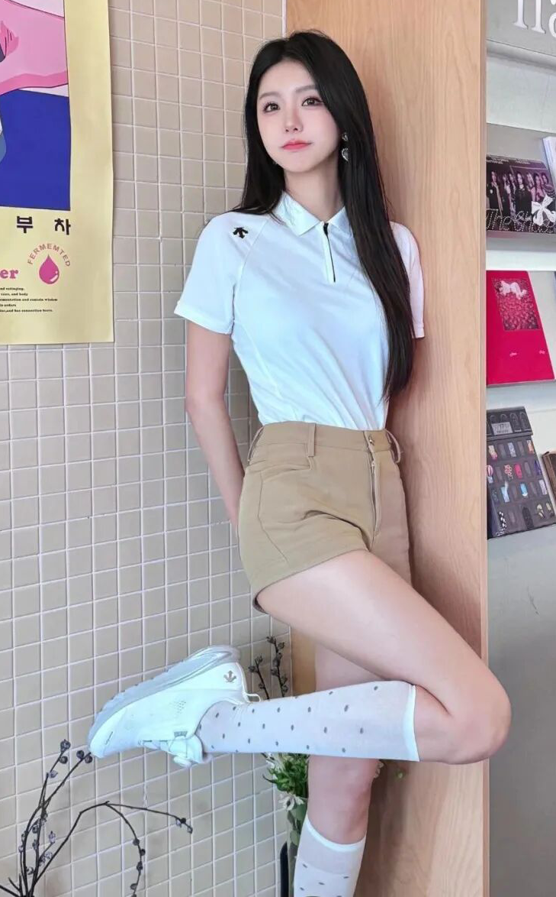
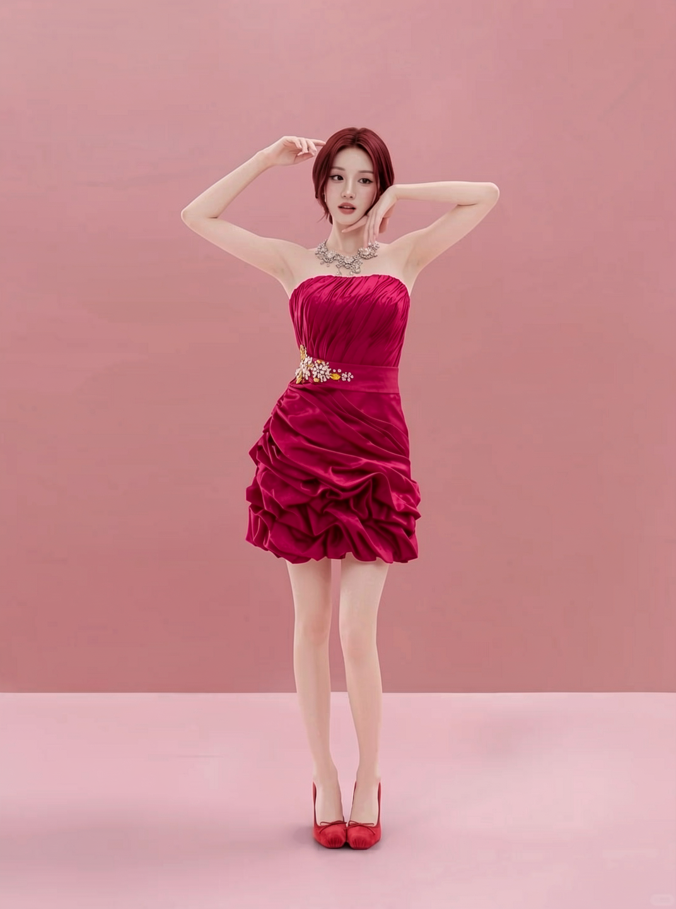
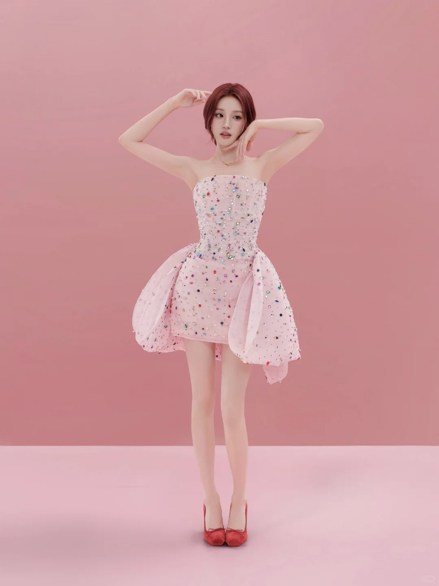
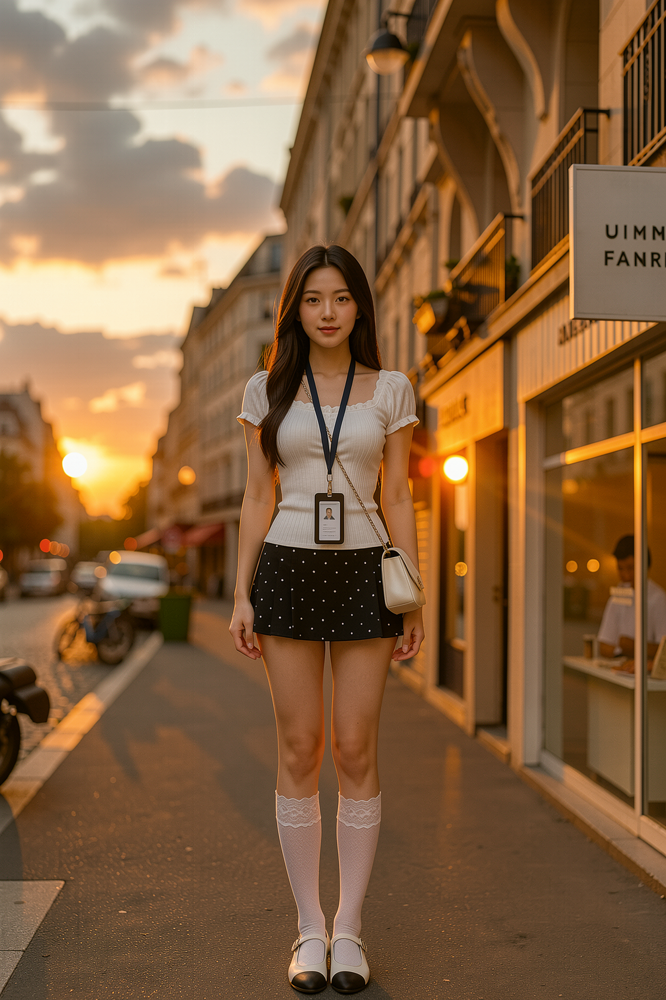
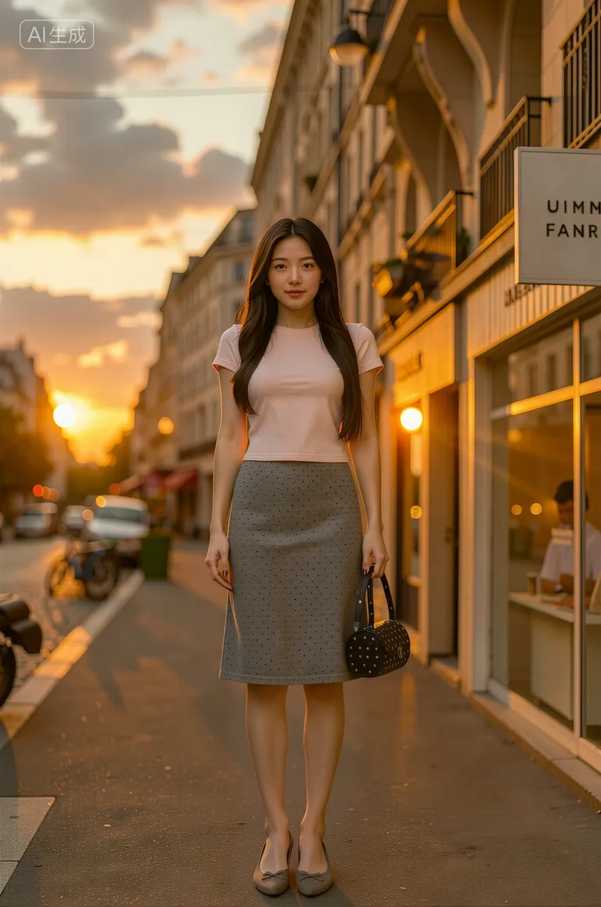
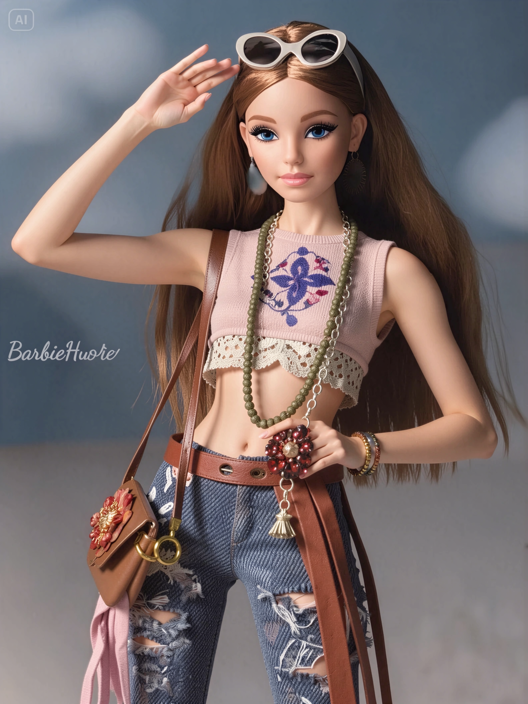
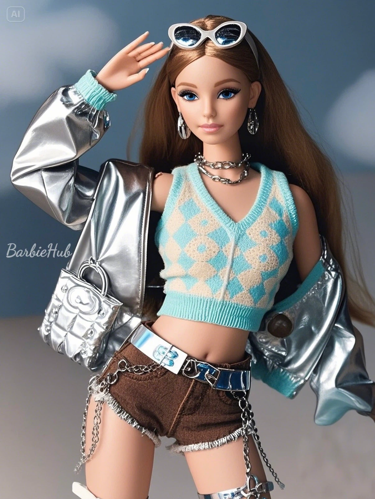

PROJECT OVERVIEW
项目概述
通过 AI 对人物服装、视觉风格与整体造型进行重新设计，在尽量保持原人物、姿态、构图或场景关系的基础上，探索不同服装风格和视觉语言的转换可能。
VISUAL EXPLORATION 04 · 2026 · FASHION AI
AI 时尚风格重构设计
通过参考原始人物造型、构图和视觉关系，使用 AI 对服装风格与整体视觉表现进行重新设计，同时尽可能保持主体、姿态或场景关系的一致性。


PROJECT OVERVIEW
PROJECT OVERVIEW
通过 AI 对人物服装、视觉风格与整体造型进行重新设计，在尽量保持原人物、姿态、构图或场景关系的基础上，探索不同服装风格和视觉语言的转换可能。
CREATIVE OBJECTIVE
SOURCE / INPUT
4 组原始设计照片，包含确定的人物造型、姿态、构图与场景视觉关系，作为 AI 重构的参考依据。
PROCESS
分析原图的主体特征与构图 → 描述重构后的服装风格与质感 → AI 重绘服装与配饰 → 比对姿态、光影一致性并筛选结果。
VISUAL CONTROL
锁定人物五官、身体姿态、镜头构图、场景与光影方向，将变化集中在服装廓形、面料材质、色彩搭配与配饰上。
FINAL OUTPUT
4 组 Before / After 对照成片，每组均为「原始设计 → AI 重构设计」的完整对应关系。
PROJECT BACKGROUND & AI TECHNOLOGY
服装造型的快速风格迭代需要在保持人物与构图的前提下，高效尝试多种穿搭与视觉风格。
本项目以人物原图为基础，通过 AI 对服装、配饰与整体造型进行重新设计，在锁定人物五官、姿态与场景构图的前提下，快速生成不同服装风格与配色方案，用于造型方向的快速对比与选择。
TOOLS
GENERATION
以原图人物与构图为参考，通过提示词描述目标服装廓形、材质与配色，由 AI 重绘服装与配饰部分。
WORKFLOW
RECONSTRUCTION FLOW
原始人物照片与造型参考
提取主体特征、姿态与镜头关系
选定目标服装风格与配色语言
生成候选画面并迭代调整细节
人物 / 构图一致性比对与修正
输出与原图直接对照的成片
BEFORE / AFTER COMPARISON
按住中间分割线左右拖动：向右显示更多 BEFORE，向左显示更多 AFTER。





